صفّ حسب الفئة أو ابحث باسم المنتج. تواصل معنا لمعرفة الأسعار والتوفر.

Gümrük Halatı
6 mmGümrük Halatı
8 mm
Avrupa Tipi Gümrük Halatı

Gümrük Halatı Başlığı

Kırmızı Çatı Halatı
33 mt – 1000 mt
Gergi Lastiği
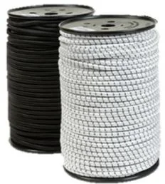
Gergi Lastiği (Rulo)
6 mm – 8 mm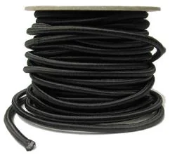
Monofilament Gergi Lastiği
08 mm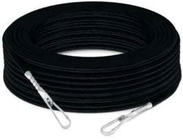
Monofilament Gergi Lastiği
14 mt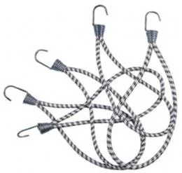
Metal Kancalı Lastik
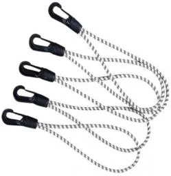
Plastik Kancalı Lastik
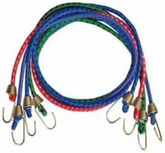
Bagaj Lastiği
1 mt – 1.20 mt – 1.50 mt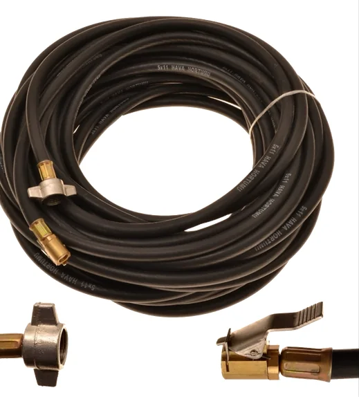
Lastik Şişirme Hortumu
بصامولة فراشة M16x1.5
24 No Kapsül
مجلفن – ستانلس – نحاس
28 No Kapsül
مجلفن – ستانلس – نحاس
31 No Kapsül
مجلفن – ستانلس – نحاس
40'lık Tır Kapsülü
مجلفن – ستانلس
Oval Kapsül
مجلفن – ستانلس
Tır Kapsülü Contası

Oval Kapsül Contası

Çatı Kapsülü
كبير – صغير
Branda Kancası
15 – 20 – 25 – 30 – 35 – 40 mm
Dorse Kancası
25 – 30 – 32 mm
TR Tipi Kanca
30 – 35 mm
Geniş Aralık Kapak Kancası

İki Parça Oynarlı Kanca
25 – 27 mm
Tek Parça Oynarlı Kanca
25 – 27 mm
P Tipi Dorse Kancası

Dört Delikli Dorse Kancası

Metal Dönerli Kanca

Plastik Dönerli Kanca
خيارات ألوان
Plastik Lastik Ucu Kanca

Plastik Lastik Ucu Kanca
موديل جديد، خيارات ألوان
Lastik Uç Aparatı Karabinalı

Yaylı Kanca

S Kanca

Halka
14 – 18 – 20 – 50
D Halka

Makaralı Toka Takım
25 mm – 30 mm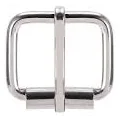
Makaralı Toka Takım
2 cm – 3 cm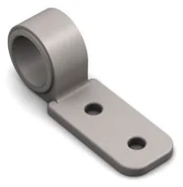
Plastik Gergi Aparatı
مغلق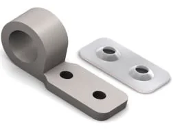
Plastik Gergi Aparatı
مقوى بصفيحة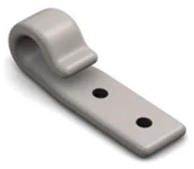
Plastik Gergi Aparatı
مفتوح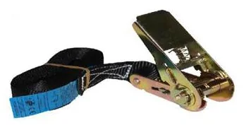
Mini Spanzet
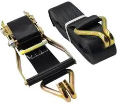
Emniyet Kemerli Spanzet
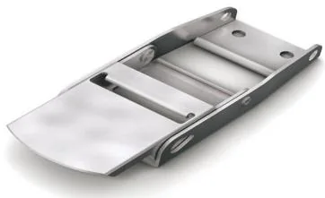
Yan Perde Tokası
كبير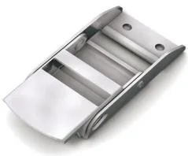
Yan Perde Tokası
صغير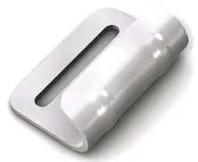
Yan Perde Kancası
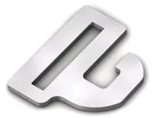
TR Tipi Kanca
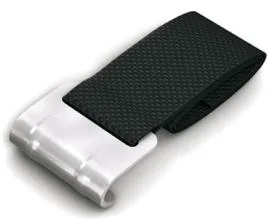
Kolonlu Dikilmiş Kanca
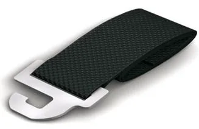
Kolonlu Dikilmiş TR Kanca
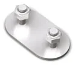
Sabitleme Laması

Kapak Kayışı
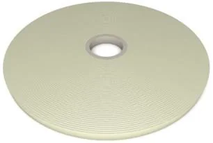
Kapak Kayışı
مستورد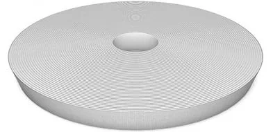
Yapışabilir Kolon
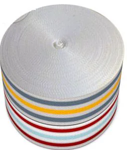
Çadırcı Kolonu
50 mt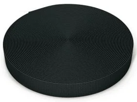
Toka Gergi Kolonu
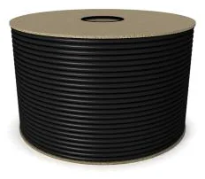
Branda Fitili
8 mm – 10 mm
Kayar Çatı Plastiği
نوع 1 · 570 – 650
Kayar Çatı Plastiği
نوع 2 · 500+70 – 600 – 650
Kayar Çatı Plastiği
نوع 3
Kayar Çatı Plastiği
نوع 4
Kayar Çatı Plastiği
نوع 5
Kayar Çatı Plastiği
نوع 6
Kayar Çatı Katlama Plakası

Tavan Bağlama Tokası

Tavan Bağlama Tokası Kemeri

Tavan Bağlama Tokası
لفة
Parçalı Reflektör Şerit
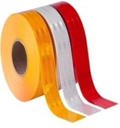
Reflektör Şerit
جودة أولى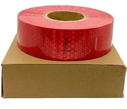
Reflektör Şerit
جودة ثانية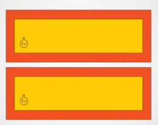
TIR Reflektör
معدني – لاصق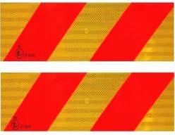
Kamyon Reflektör
معدني – لاصق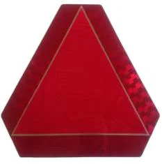
Üçgen Sac Reflektör
Katlanır TIR Yazısı
أرسل لنا قائمة المنتجات وسنرد عليك في نفس اليوم.